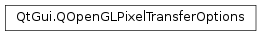

QOpenGLPixelTransferOptions¶
Synopsis¶
Functions¶
- def
alignment() - def
imageHeight() - def
isLeastSignificantBitFirst() - def
isSwapBytesEnabled() - def
rowLength() - def
setAlignment(alignment) - def
setImageHeight(imageHeight) - def
setLeastSignificantByteFirst(lsbFirst) - def
setRowLength(rowLength) - def
setSkipImages(skipImages) - def
setSkipPixels(skipPixels) - def
setSkipRows(skipRows) - def
setSwapBytesEnabled(swapBytes) - def
skipImages() - def
skipPixels() - def
skipRows() - def
swap(other)
Detailed Description¶
ThePySide2.QtGui.QOpenGLPixelTransferOptionsclass describes the pixel storage modes that affect the unpacking of pixels during texture upload.
-
class
PySide2.QtGui.QOpenGLPixelTransferOptions¶ -
class
PySide2.QtGui.QOpenGLPixelTransferOptions(arg__1) Parameters: arg__1 – PySide2.QtGui.QOpenGLPixelTransferOptionsConstructs a new
PySide2.QtGui.QOpenGLPixelTransferOptionsinstance with the default settings.
-
PySide2.QtGui.QOpenGLPixelTransferOptions.alignment()¶ Return type: PySide2.QtCore.intReturns the current alignment requirement for each pixel row.
-
PySide2.QtGui.QOpenGLPixelTransferOptions.imageHeight()¶ Return type: PySide2.QtCore.intReturns the currently set image height.
-
PySide2.QtGui.QOpenGLPixelTransferOptions.isLeastSignificantBitFirst()¶ Return type: PySide2.QtCore.boolReturns
trueif bits within a byte are ordered from least to most significant.
-
PySide2.QtGui.QOpenGLPixelTransferOptions.isSwapBytesEnabled()¶ Return type: PySide2.QtCore.boolReturns
trueif the byte ordering for multibyte components is reversed.
-
PySide2.QtGui.QOpenGLPixelTransferOptions.rowLength()¶ Return type: PySide2.QtCore.intReturns the currently set row length.
-
PySide2.QtGui.QOpenGLPixelTransferOptions.setAlignment(alignment)¶ Parameters: alignment – PySide2.QtCore.intSets the
alignmentrequirements for each pixel row. Corresponds toGL_UNPACK_ALIGNMENT. The default value is 4, as specified by OpenGL.
-
PySide2.QtGui.QOpenGLPixelTransferOptions.setImageHeight(imageHeight)¶ Parameters: imageHeight – PySide2.QtCore.intSets the image height for 3D textures to
imageHeight. Corresponds toGL_UNPACK_IMAGE_HEIGHT. The default value is 0.
-
PySide2.QtGui.QOpenGLPixelTransferOptions.setLeastSignificantByteFirst(lsbFirst)¶ Parameters: lsbFirst – PySide2.QtCore.boollsbFirstspecifies if bits within a byte are ordered from least to most significat. The default value isfalse, meaning that the first bit in each byte is the most significant one. This is significant for bitmap data only. Corresponds toGL_UNPACK_LSB_FIRST.
-
PySide2.QtGui.QOpenGLPixelTransferOptions.setRowLength(rowLength)¶ Parameters: rowLength – PySide2.QtCore.intSets the number of pixels in a row to
rowLength. Corresponds toGL_UNPACK_ROW_LENGTH. The default value is 0.
-
PySide2.QtGui.QOpenGLPixelTransferOptions.setSkipImages(skipImages)¶ Parameters: skipImages – PySide2.QtCore.intSets the number of images that are skipped to
skipImages. Corresponds toGL_UNPACK_SKIP_IMAGES. Equivalent to incrementing the pointer passed toQOpenGLTexture.setData(). The default value is 0.
-
PySide2.QtGui.QOpenGLPixelTransferOptions.setSkipPixels(skipPixels)¶ Parameters: skipPixels – PySide2.QtCore.intSets the number of pixels that are skipped to
skipPixels. Corresponds toGL_UNPACK_SKIP_PIXELS. Equivalent to incrementing the pointer passed toQOpenGLTexture.setData(). The default value is 0.
-
PySide2.QtGui.QOpenGLPixelTransferOptions.setSkipRows(skipRows)¶ Parameters: skipRows – PySide2.QtCore.intSets the number of rows that are skipped to
skipRows. Corresponds toGL_UNPACK_SKIP_ROWS. Equivalent to incrementing the pointer passed toQOpenGLTexture.setData(). The default value is 0.
-
PySide2.QtGui.QOpenGLPixelTransferOptions.setSwapBytesEnabled(swapBytes)¶ Parameters: swapBytes – PySide2.QtCore.boolswapBytesspecifies if the byte ordering for multibyte components is reversed. The default value isfalse. Corresponds toGL_UNPACK_SWAP_BYTES.
-
PySide2.QtGui.QOpenGLPixelTransferOptions.skipImages()¶ Return type: PySide2.QtCore.intReturns the number of images that are skipped.
-
PySide2.QtGui.QOpenGLPixelTransferOptions.skipPixels()¶ Return type: PySide2.QtCore.intReturns the number of pixels that are skipped.
-
PySide2.QtGui.QOpenGLPixelTransferOptions.skipRows()¶ Return type: PySide2.QtCore.intReturns the number of rows that are skipped.
-
PySide2.QtGui.QOpenGLPixelTransferOptions.swap(other)¶ Parameters: other – PySide2.QtGui.QOpenGLPixelTransferOptions
© 2018 The Qt Company Ltd. Documentation contributions included herein are the copyrights of their respective owners. The documentation provided herein is licensed under the terms of the GNU Free Documentation License version 1.3 as published by the Free Software Foundation. Qt and respective logos are trademarks of The Qt Company Ltd. in Finland and/or other countries worldwide. All other trademarks are property of their respective owners.